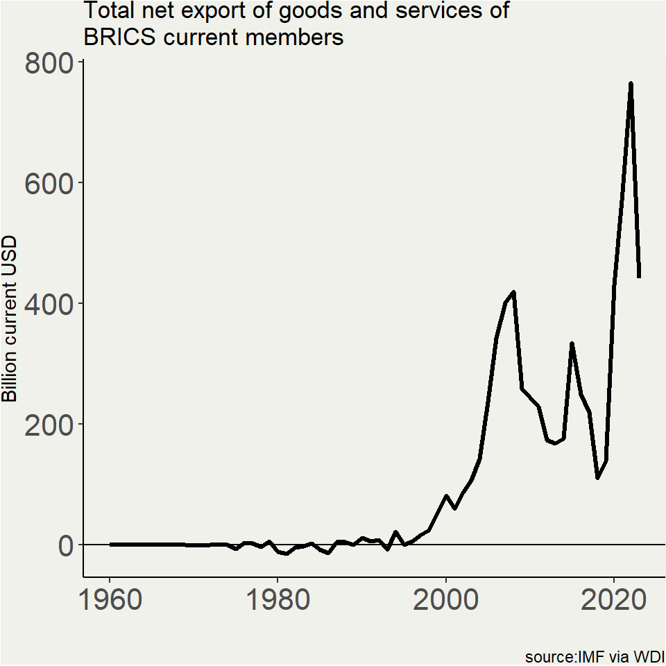
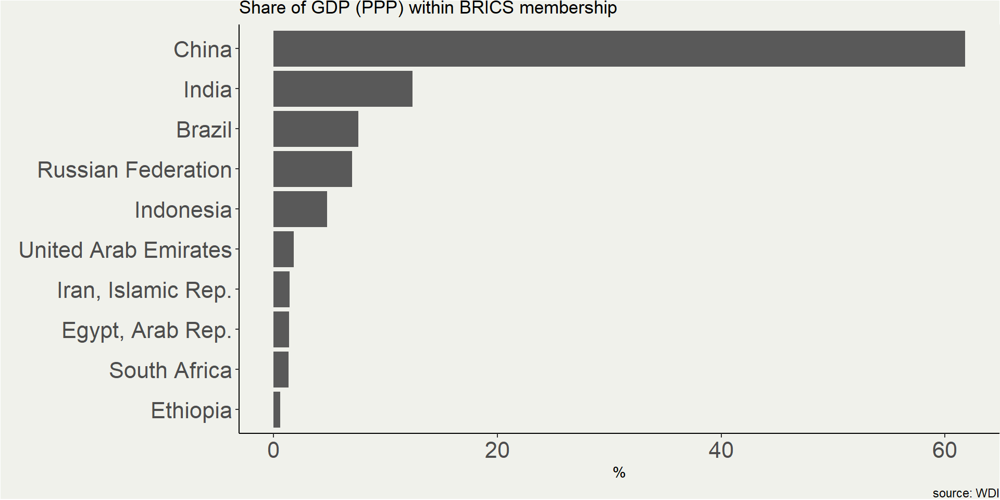
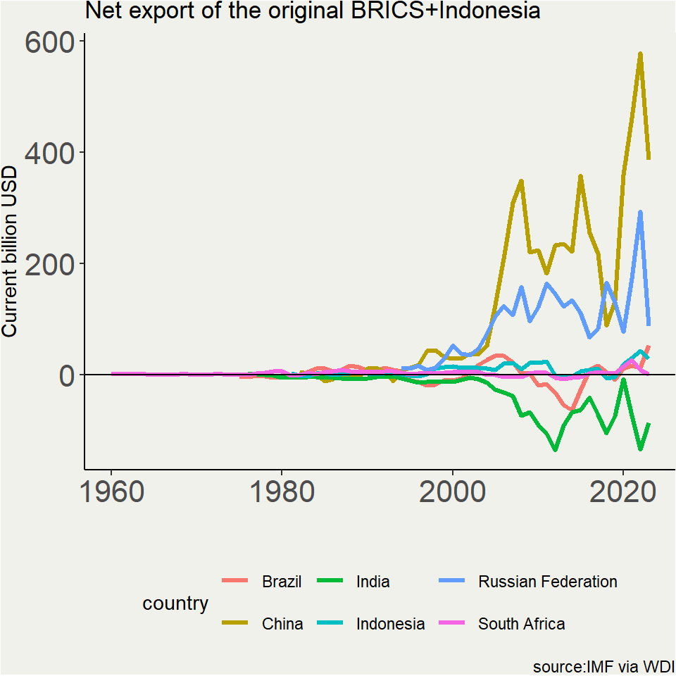
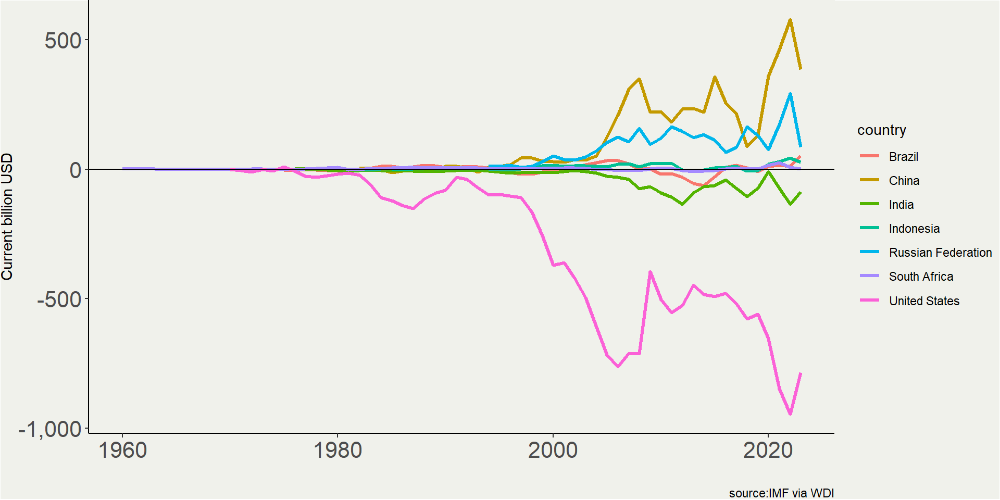
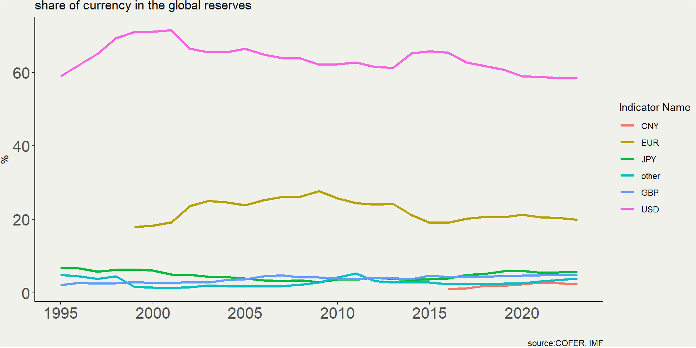
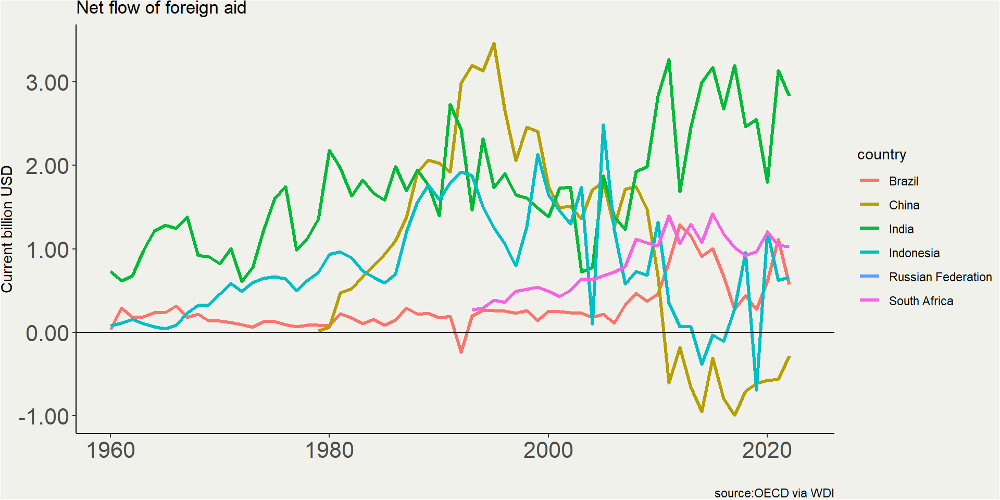

Indonesia in BRICS: a discussion
Krisna Gupta
February 19, 2025
Intro
Indonesia surprises many when it suddenly joined BRICS.
- something avoided by the previous administration.
Main reasons: alternatives to the western-led global order.
- Does Indonesia really needs to join BRICS?
BRICS is a part of a bigger conversation: the end(?) of a unipolar world.
- Move aside, economists!
Why?
Export market access.
Fairer global order, more agency.
Alternative financing for development & agency.
Alternatives to the dollar.
Alternative source of technology: climate, food, defense.
Why not?
BRICS is extremely diverse.
Some of the previous arguments may not be true.
Many of the previous arguments may be achievable without joining BRICS.
BRICS may not matter in reality, but it may matter in Trump’s mind.
Out of the west, into the dragon?
GDP
In 2023, BRICS member represents around 38% of the world’s GDP PPP. G7 is 27%. It is, however, unorthodox, in the sense it doesn’t have a secretariat. China’s size in BRICS > US’ in the G7.
Export (left) & import, 2023


Trade Balance
On aggregate, BRICS’s export is larger than its import. Collectively, they all need other markets.

India is the largest deficit countries, but it won’t act as ‘the buyer’ in BRICS.
BRICS-USA relationship
Decoupling won’t happen without radical changes in relative prices and productivity shock, a lose-all situation (economically)
Export for who
China has been diverting its export from US to SEA
- SEA’s export to China isn’t picking up
US market is even more important for SEA as export destination.
BRICS+ probably won’t matter for BRICS export market but risks losing US market (anti-BRICS trade measures).
Dedollarization
Dedollarization
Having so much dollar asset risks a sanction, alternative solution is in everyone’s (non-west) interest,
The closest alternative in BRICS is CNY. but it requires PBoC to loosen its control over the renminbi, something it probably won’t give up.
Indeed, the U.S. remains accomodative to the global saving needs.
- Even if countries trade with other currency, it’ll be converted to USD to buy US assets.
Alternative payment is accessible for non-BRICS.
Foreign Aid
Foreign aid
Most of BRICS members are net recipient of foreign aid but China.
NDB’s role so far is outstripped by western-led institution.
Indeed, Chinese role in foreign aid is increasing, especially since the mid 2010s.
Chinese loan focuses on infrastructure development, while DAC focues on MDGs (poverty, health, etc)
tapping to non-DAC aid doesn’t require one to be a member of BRICS
Conclusion
Larger export market, alternative financial source and dollar alternatives may not be the feasible reasons to join BRICS.
- worse, it risks an uncessarily costly ‘decouple’.
Most of the economic argument for joining BRICS, if true, would still be true without joining BRICS.
Many observers note the need for a platform where Indonesia can have larger role and not west-led. Will this not other-led?
Remember Bandung and the non-aligned movement?
What’s next?
The US-China rivalry is the bigger issue.
Both has little economic incentive to ‘decouple’. But security always trump economics.
US is isolating itself (ot just from BRICS). The “reciprocal tariff” is a radical proposition.
There may be a vaccuum in the global leadership as a whole.
It’s not clear how the next global order would look like.
What’s next
As a good Indonesian, It’s time for Indonesia to take a leadership role in all its platform, (the “bangsa besar” argument).
As a good and reasonably sensible Indonesian, it is wiser to acknowledge to keep it balanced.
- are we currently well-equipped to take a leading role?
At least in ASEAN, Indonesia is a large player: it should act like one.
Let’s entertain the idea of the increasing role of Japan.
References
Associated Press. 2025. Indonesia is admitted to the BRICS bloc of developing nations. VOA News.
Rachman, A.A. 2025. Indonesia bergabung dengan BRICS: peluang besar dan babak baru dalam hubungan bilateral. SuarAkademia TCID.
Gopinath, G & Oleg Itskhoki. 2021. Dominant Currency Paradigm: A Reviw. NBER Working Paper Series.
Intan, G. 2025. Luhut: Indonesia tidak takut dikucilkan Amerika usai gabung BRICS. VOA News.
Jailani, A.K. 2025. Indonesia’s entry into BRICS: Reshaping the global legal order. The Jakarta Post.
Economist, The. 2025. South-East Asians producers are being hammered by Chinese imports.
Economist, The. 2024. China’s manufacturers are going broke.
Bryan Tan Jia Yang. 2025. BRICS expansion and Japan’s latent leadership in a torn Indo-Pacific. East Asia Forum.
Mai, L. 2025. The latest on Southeast Asia: Indonesia joins BRICS. CSIS.
Pierre van der Eng. 2017. Why does Indonesia seem to prefer foreign aid from China? East Asia Forum.
Economist, The. 2023. The BRICS bloc is riven with tensions.
Manggala, P.U. 2025. Indonesia’s bold step into BRICS and beyond. East Asia Forum.
Sakti, R.E. 2025. Indonesia resmi gabung BRICS, apa tantangannya?. Kompas.
ISEAS. 2024. The State of Southeast Asia 2024 Survey Report.